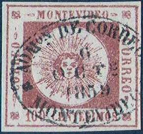
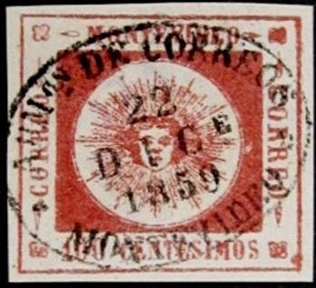

Reproduction 'A' of the 60 c (thin numerals) can be recognized by the extended left leg of the 'M' of 'MONTEVIDEO'.
Return To Catalogue - Uruguay 1859-60 'Sun' issue Uruguay 1859-60 'Sun' issue, forgeries by Fournier
Note: on my website many of the
pictures can not be seen! They are of course present in the
catalogue;
contact me if you want to purchase it.
Uruguay 1859-60 'Sun' issue, genuine
stamps and other forgeries.
Uruguay 1859-60 'Sun' issue, forgeries by
Fournier
Sperati forgeries are quite rare and valuable, they are usually very deceptive.
Sperati forgeries:
The forger Sperati made forgeries of all values
(thin and thick numerals):
Thin numerals (1859):
60 c: 2 reproductions
80 c: 2 reproductions
100 c: 4 reproductions
120 c: 1 reproduction
180 c: 1 reproduction
240 c: 3 reproductions
Thick numerals (1860):.
60 c: 1 reproduction
80 c: 1 reproduction
100 c: 1 reproduction
120 c: 1 reproduction
180 c: 2 reproductions
Reproduction 'A' of the 60 c (thin numerals) can be recognized by
the extended left leg of the 'M' of 'MONTEVIDEO'.
Reproduction 'B' of the 60 c (thin numerals) has the 'VI' of 'MONTEVIDEO' joined at the top.

80 c thin numerals Sperati's Reproduction 'A'. There is a yellow
blotch of ink outside the frame above the 'N' of 'MONTEVIDEO'.
Also a yellow spot of ink can be found in the upper right hand
side corner, just outside the outer rectangle. The '0' of '80' is
open at the bottom. (Image obtained from Richard Frajola's
website:
http://www.seymourfamily.com/rfrajola/Sperati/speratiindex.htm)
Reproduction 'A' of the 80 c thin numerals (image obtained from a
Sotheby auction).
Reproduction 'B' of the 80 c (thin numerals) has a slanting '8' (sorry, no image available yet).
 

Sperati's reproduction 'A'of the 100 c value. The first 'O' of
'MONTEVIDEO' is open at the top in the Sperati forgery.
Reproduction 'B' of the 100 c (thin numerals) has a dot outside the outer frame above the 'MO' of 'MONTEVIDEO' (sorry, no image available).



Sperati's reproductions 'C' and 'D' (2x) of the 100 c value
Reproduction 'C' of the 100 c (thin numerals) has
the upper left flower ornament very 'white' (see image above).
Reproduction 'D' of the 100 c (thin numerals) always has the same
cancel (see image above) and can thus be easily identified.

Sperati only made one forgery of the 120 c thin numeral stamp.
(Image obtained from Richard Frajola's website:
http://www.seymourfamily.com/rfrajola/Sperati/speratiindex.htm).
There is a weak spot in the lower part of the left outer
frameline. Also a white horizontal line in the central rectangle
just to the right of the 'E' of 'CORREO'.

The Sperati forgery of the 180 c (thin numerals) has a dot in
front of '180'.
Sperati Reproduction A of the 240 c value (copied from the
original type 11)

Sperati forgery of the 240 c value (Reproduction 'B').
Reproduction 'A' of the 240 c (thin numerals) can
be recognized by the break in the lower frameline below the 'S'
of 'CENTESIMOS'.
Reproduction 'B' of the 240 c (thin numerals) has a smudged first
'O' of the right 'CORREOS', and the second 'O' of this word is
open at the top.
Reproduction 'C' has a white dot just outside the central circle
below the 'E' of 'MONTEVIDEO'.
The Sperati forgery of the 60 c (thick numerals) has some smudges in the upper left frameline and a dot between the 'E' of the left 'CORREO' and this frameline (sorry, no image available yet).

Sperati forgery of the 80 c (thick numerals), image obtained from
Richard Frajola's website:
http://www.seymourfamily.com/rfrajola/Sperati/speratiindex.htm.
This cancel does not seem to appear in the book on Sperati
forgeries.

Sperati forgery of the 100 c (thick numerals), right image
obtained from Richard Frajola's website:
http://www.seymourfamily.com/rfrajola/Sperati/speratiindex.htm.
The left leg of the 'M' of 'MONTEVIDEO' is broken as well as the
first 'R' of the left 'CORREO'.

Sperati forgery of the 120 c (thick numerals), right image
obtained from Richard Frajola's website:
http://www.seymourfamily.com/rfrajola/Sperati/speratiindex.htm. A
smudge of ink connects the 'M' of 'MONTEVIDEO' with the solid
rectangular design below it.

Sperati Reproduction 'A' of the 180 c (thick numerals), image
obtained from Richard Frajola's website:
http://www.seymourfamily.com/rfrajola/Sperati/speratiindex.htm.
There is a break in the lower frameline below 'EN' of
'CENTESIMOS' and another smudgy part below the 'IM' of this word.
Also there is a break in the upper frameline above the 'ID' of
'MONTEVIDEO'
The Sperati forgery 'Reproduction B' of the 180 c (thick numerals) has some defects on the top left side of the '8' (sorry, no image available yet).
The cancels forged by Sperati are:
1) 'ADMon DE CORREOS MONTEVIDEO' in a single ellipes (sometimes
with traces of the second ellipse) with the following dates:
'15 ABRIL 1859', '25 JUNIO 1859', '29 AGOSTO 1859, '6 OCTE 1859',
'29 NOVE 1859', '22 DICE 1859', '8 ENER.. 1860' (partial strike),
'20 ENERO 1860', '19 ABRIL 1860', '8 MAYO 1860', '10 ABRIL 1861',
'16 AGOSTO 1861', '24 MARZO 1862', '18 AGOSTO 1863', '27 DICE
1864':
2) 'ADMIN ..RREOS MONTEVIDEO DICBRE 8 1863' in a double ellipse:
3) 'ADMon DE CORREOS MONTEVIDEO 20 NOVIBRE 1865'
in a double ellipse
Two staggered ellipses, 'ADon DE CORREOS' on top,
'REP-O-DEL-URUG' below, with townnames 'ROSARIO', 'MERCEDES' or
'PAYSANDU' in the center:
4) A rounded rectangle with 'CERTIFICACION'
5) The mute negative cancel of Salto, in either a full strike or a quarter as a partial strike:
6) Manual pencancels (on first issue).
More on forgeries can be found on http://www.geocities.com/claghorn1p/Uruguay/index.htm (Bill Claghorn's site).

{kind=link}
{kind=link}